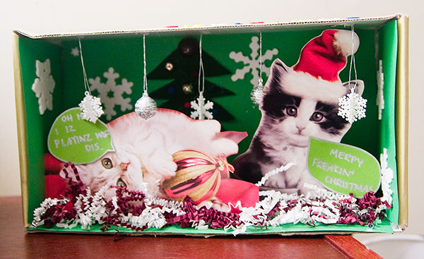
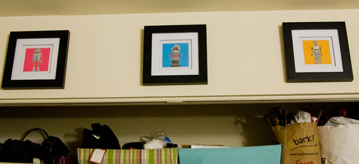
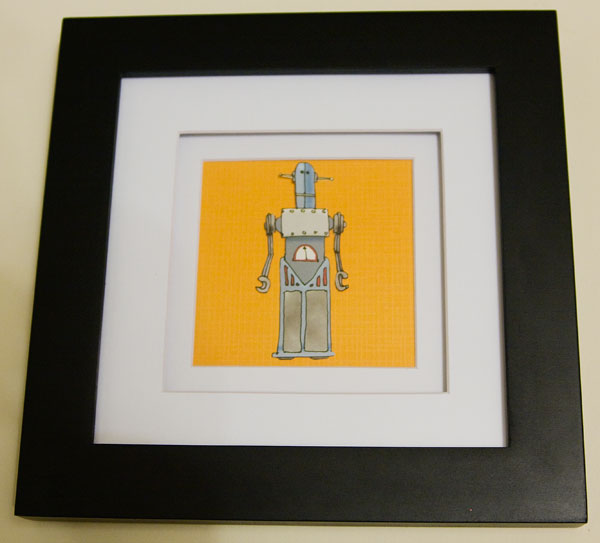

Not only is it Martin Luther King Day but it is also the day of our first visible snow accumulation. It has been flurrying on and off all morning collecting a little bit in the grass. It’s also my good friend Pammy’s birthday. We’ll be seeing her later tonight assuming we’re not snowed in.
This tackle was nuts. The Ravens player needed to be carted off the field in a stretcher. In other news it looks like the Steelers and Cardinals will be in the Super Bowl.
I stumbled upon this on fffound.com, my favorite source for random images that everyone is buzzing about. I have no idea where it came from but it is a little out of date with the lack of Google’s Chrome in the mix.
Earlier this afternoon their was a broken train at Silver Spring causing all kinds of ugly delays in both directions. This was the scene at Metro Center forcing me to hop one station out of my way so I could get a seat. This must be a taste of things to come on inauguration day, which I will be skipping by working from home.
Grant Robertson and Christina Warren are both Weblogsinc (now AOL) bloggers and new media junkies. So it shouldn’t be any surprise when the couple got engaged via Twitter today (her reaction). Now this is obviously something Grant had been planning and he just couldn’t wait for his precious Christina to return home to Atlanta from San Fransisco where she is covering the Macworld Expo. But come on dude! At least wait to do it in person and record it on video (like a certain someone). Just imagine the grand kids reaction when you tell them you popped the question on Twitter:
“Twitter? Only old farts used Twitter”
“You whippersnappers! It’s what we did back then!”
She constructed this awesome LOLcat Christmas diorama. The cats came from post cards and the rest was made by Pammy herself. This will remain on display for years to come.

Kristina was also in the crafting mood for my Christmas gift. When she was browsing through the Paper Source store one day she stumbled upon robot wrapping paper (and Kristina knows how much I love robots). She carefully cut out three of the robots, glued them to colorful paper, and framed them in stylish square frames. They now hang above our closet.


With all of the talk about how bad the economy was during this holiday season it was nice to receive a few handcrafted gifts. They were better than anything that could have been bought in a store. Plus, the gift-givers noted how much fun they were too make!
It seems like just yesterday that Twitter was an unknown start-up with a quirky idea. Now Twitter is definitely mainstream. News of the recent account hackings made the headlines of CNN.com. Apparently someone hacked into internal support tools used by Twitter to help their users. The hacker then tweeted from 33 prominent accounts including foxnews, barackobama, britneyspears and even CNN’s own ricksanchezcnn.
Screenshots of the defaced accounts can be seen in this Flickr pool.
This is in addition to a Twitter phishing attempt that happened over the weekend. When your site becomes the target of nefarious attacks then you know you have reached the big time.
I just read over on Techcrunch that Picasa for the Mac is finally ready. You can get it at http://picasa.google.com/mac/. I wrote about the rumors of Picasa on the Mac 10 days short of a year ago. The Mac version is nearly identical to it’s PC counterpart, interface and all. Check out the overview video embedded below.
One of the main reasons I like Picasa over iPhoto, the free photo program that comes with every new Mac, is Picasa keeps your folders in tact not forcing you to keep your library in a specific hierarchy. Plus, I find Picasa more intuitive and easy to use.
Now I just need to figure out how to sync my photo library and information between my Mac and PC instances of Picasa.
If you haven’t tried Picasa yet, give it a whirl .It really is a great way to organize and edit photos.
I-66 West was backed up a bit on our journey to Charlottesville. Kristina kept herself busy by doing crafts in the car. Right now we are at a Burger King somewhere near Warrenton for a pit stop. I have no idea how much farther we have to go.
Puck will be all by himself this Xmas eve as he watched us pack up the van. Kristina and I are headed to Charlottesville, Virginia, to spend Christmas at her grandmother’s place. Don’t worry the roommates will be back on Christmas to feed Puck a hearty cat dinner and we left plenty of food out. Have a Merry Christmas everyone!


{kind=link}